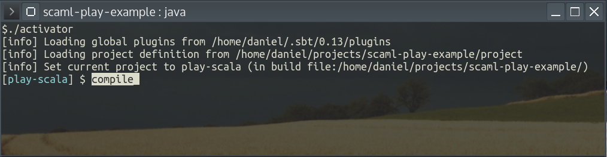

Aufsetzen des Beispielprojekts
Projekt herunterladen
Lade das Projekt herunter, entweder mit Git:
git clone git@github.com:Jentsch/scaml-play-example.git
Oder alls kompaktes ZIP:
Entwicklungskonsole starten
Unter Linux starte die Datei activator in einer Konsole.
In Windows kann die activator.bat mit einem Doppelklick gestartet werden.
In der sich öffnenden Konsole tippe "compile" wenn die Bereitschaft mit "$" signalisiert wird.

Dies kann je nach Internetverbindung beim ersten Start einige Zeit in Anspruch nehmen. In der Zwischenzeit kannst Du Entwicklungsumgebung einrichten.